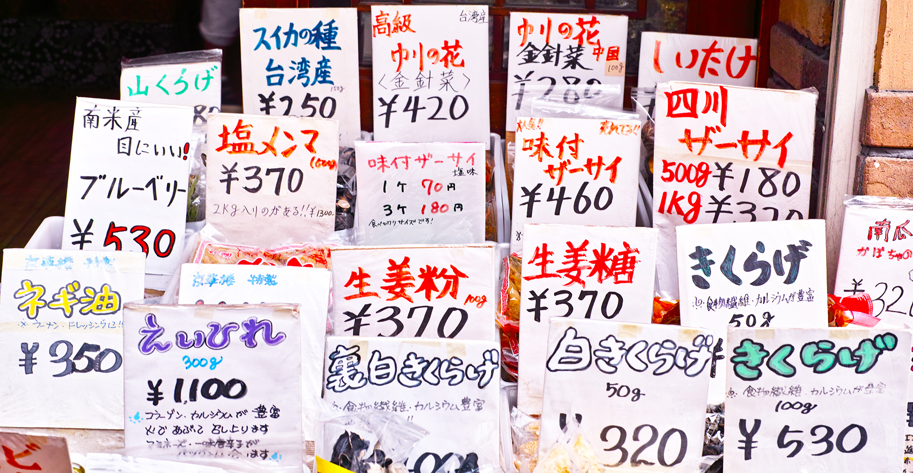
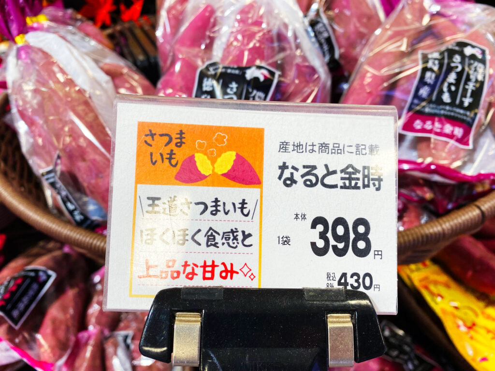
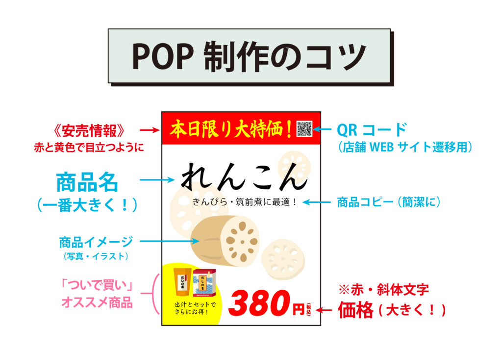
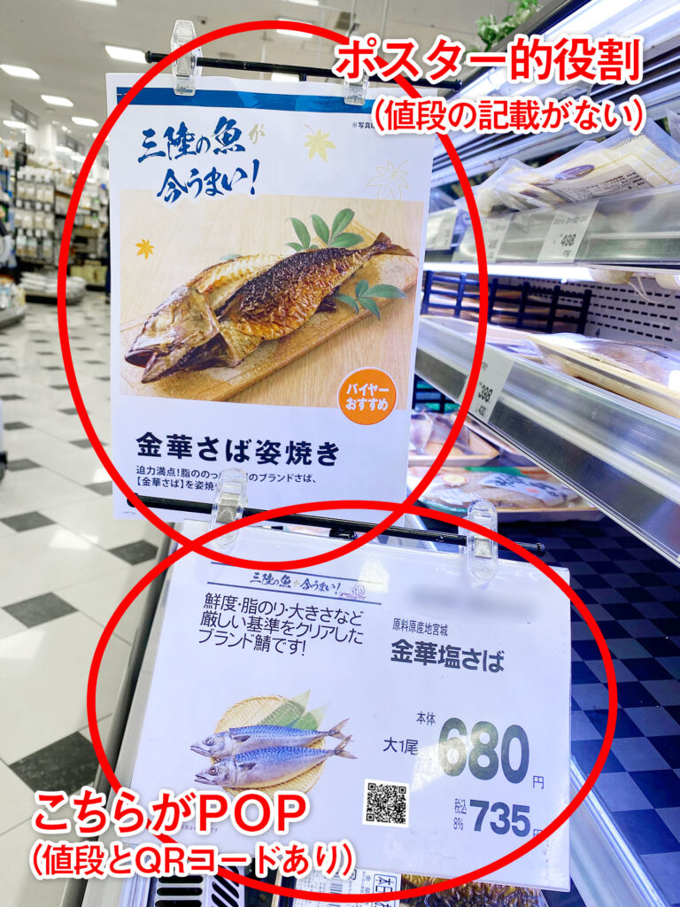
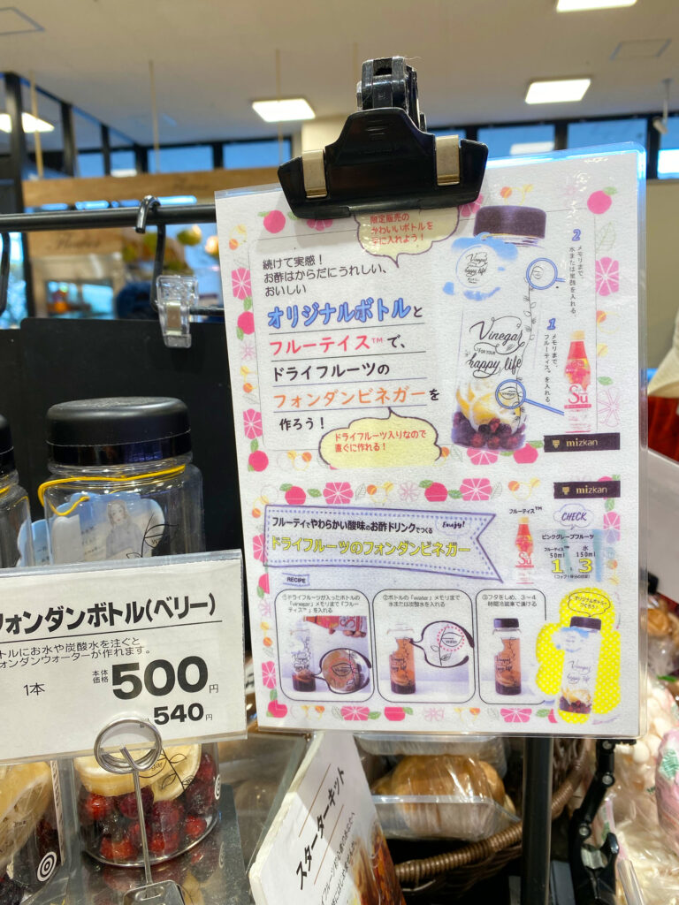
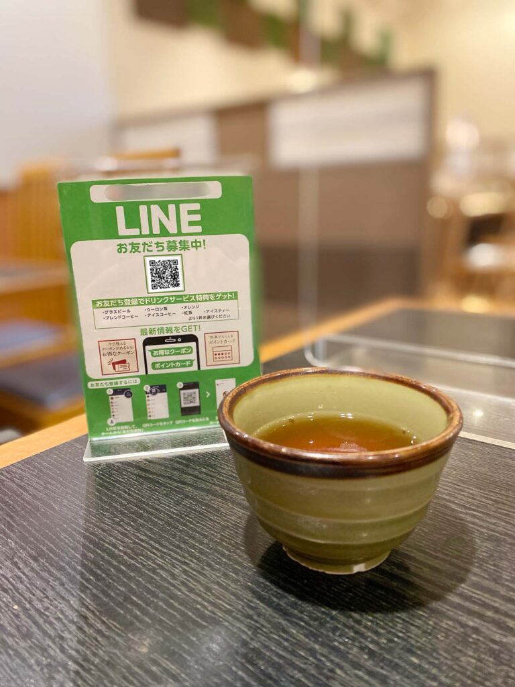

#038_プロ直伝！POP制作のコツ

こんにちは！matsumotoです。
これまで、毎回LINE公式アカウントを上手に運用するコツを語ってきましたが、本日は特別編「お店の売上アップにつながるPOP制作のコツ」について解説していきたいと思います！
お店を開くと同時に、必要となるのがPOP。正確には「Point of Puchases advertising」の略で、「ポップ」「ピーオーピー」と読みます。店頭の販促掲示物全般（ポスター・のぼり・バナー等含む）を指し、商品の価格やキャンペーン、セールスポイントなどを訴求します。たいていは店長やスタッフが手作りしていますが、お店の売り上げを左右する重要な役割を持っています。
ここからは、matsumotoの知り合いであるPOP講師・りみさんに解説していただきますね！
（１）POPが果たす役割
はじめまして。POP講師のりみです。
早速ですが、そもそもPOPとは？？？というお話から始めていきますね！

POPはただ情報を伝えるだけでなく、お客様の目を引き、購入意欲を持っていただくための大切なツールです。商品陳列とセットで考えると、店頭を賑やかに演出できます。
極端な話、商品名とイメージと値段さえ載せればPOPは成り立つのですが、いざ自分が作るとなると皆さん必要以上に頑張ります（笑）。おそらく、デザインやイラストが得意な人ほど、「みんなを驚かせてやろう！」とこだわってしまうんですね。
そんな凝ったデザインにしなくてもOKです。
まずは、①ひと目でPOPが目に入ってくるように（居酒屋などがいい例です）。
②商品名や価格を目立たせ、財布のヒモがかたいお客様にも手に取ってもらいやすいように。
これらを念頭に置いてから、POP作りを始めましょう。
（２）POPの作り方
まずは、食料品売り場のPOP（特価品）を作ってみましょう。商品名と商品イメージを大きく入れて、価格を極太の赤文字で表記すると、プロっぽいPOPになります。ひと目見て「安い！」と伝わるよう、「大特価！」とか「ご奉仕品！」などと大きく表記するのも良いですね。

注意するポイントとしては、商品説明（産地や生産者の情報、こだわりポイントなど）が長くなればなるほど、ぱっと見たときの訴求力が落ちます（＝売れません）。商品の魅力やイメージを詳しく伝えたいなら、ポスターを別途制作すると良いですよ。POPには、最低限必要な情報だけ載せましょう。

（３）ターゲットは明確ですか？
たとえば、スーパーであれば主に主婦がメインの客層です。前述の通り、主婦は財布のヒモがかたいので、とにかく安さを強調します。女性は、脳の性質上、実によくPOPを見ていますよ！目一杯アピールしてくださいね。
一方で、男性向け・シニア向け商品のPOPはどうでしょう。
男性は、価格よりも機能やカッコよさにこだわりを持つ人が多いです。シニアであれば、軽い、持ち運びに便利、柔らかい食べ物などを求めています。
このように、ターゲット層を明確にして、ターゲットに伝わりやすい文言や文字の大きさ、POPの大きさなどを心がけましょう。ターゲット層がひと目見て「自分に必要なものはこれだ！」と思ってくれれば合格です。
（４）ついで買いしてしまうPOP
これが、今回もっともお伝えしたいポイントです。実は、女性に多い「ついで買い」。来店する女性客の約６割が、「最初は買うつもりじゃなかったのに、つい、、、」というついで買いをするそうです。それも、動機は「POP」を見て、だそうです（女性の脳がそうさせるらしいです！）。
実は、りみも先日「つい、、、」買ってしまいました。

これです。お酢のメーカーのロゴが入っているので、おそらくお酢メーカーの人が作ったものでしょう。ずらずらと情報が多すぎて、わたしが解説したPOPの作り方ルールとはだいぶ違いますが、見事これに引っ掛かってしまったのです（お酢ではなく、強炭酸水を買いましたが）。
理由は、「SNS映えしそうだから」。
おそらく、このPOPに引っかかった女性客のほとんどは、それが理由ではないでしょうか。SNS、恐るべし。。。しかも、安い！普通、こういったおしゃれなマイボトルはそれだけで千円くらいしますよね。それに、ドライベリーやレモンが入って500円。。。
このPOPには、このボトルにお酢をいれれば健康的なお酢ドリンクを作ることが出来る、と買いてありますが、代わりに強炭酸水を入れて一晩置いたところ、見事にSNS映えするドリンクが完成しました！
以上、りみの解説と実体験です。ぜひ、ご参考に。。。
（５）LINE友だちに追加してもらうPOP
皆さん、りみさんの解説でいいPOPを作れそうですか？

ちなみに、LINEの友だち追加のためだけなら、これでOKです。LINE Official Account ManagerからPOPのテンプレートをダウンロードし、好みに応じて文言を付け足したり、囲み系やアイコンなどつけてみてくださいね！
以上、お店の売上アップにぜひ！ご活用ください。もっと詳しく教えて欲しい！りみさんにPOPを作って欲しい！という方は、ぜひ画面下のボタンからmatsumotoを友だち追加してくださいね。今なら、初回30分無料相談をおこなっていますので、そちらからご相談ください。
まずはLINE公式アカウントを開設しましょう！
●LINE公式アカウントの開設方法はこちら
●LINE公式アカウントをオススメする理由はこち
●LINE公式アカウントでできることはこちら
●Lステップでできることはこちら